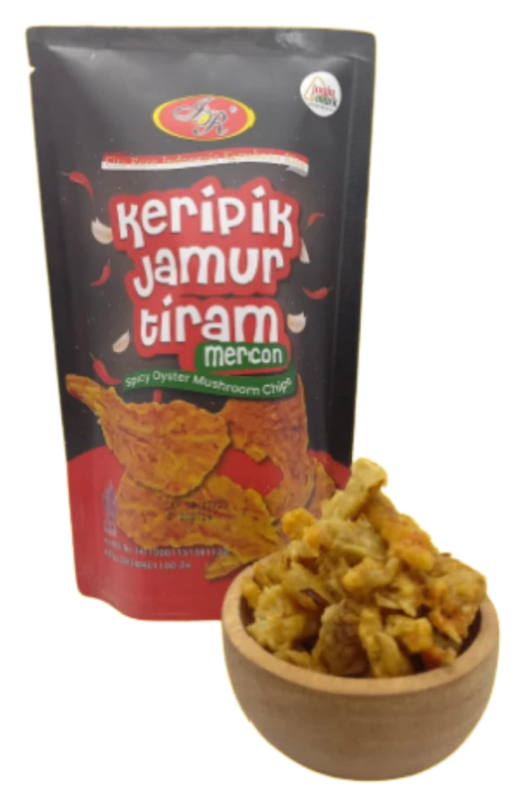

Keripik sayur dari Sleman, Yogyakarta
Makan Sayur Makin Asik
Keripik pare, jamur tiram, dan tahu yang renyah, minim minyak, dan bebas gluten. Dibuat dari bahan pilihan, dengan rasa yang bikin ketagihan.
- Bebas gluten
- Tanpa telur & bahan hewani
- Bersertifikat halal
